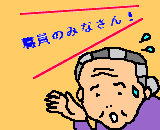
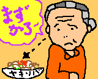
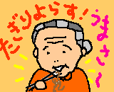

今年で三年目のハワイアンまつり。まきば園に着いたのは三時だった。
アナウンスが園内じゅうに流れた。
ばあさんじいさんがわらわらとフロアに出てきた。
今日の舞台に上がることになっていたじいさんが、
車椅子のばあさんの耳にひそひそ話しかけている。
どこに集まれって？
ばあちゃんの部屋の前まで来ると、
近ごろめっきり歩かなくなったというばあちゃんが、
入り口で手すりにつかまって立っている。
トイレ？
うんにゃぁ、いま、集合せれって言いよったじゃろ？

ばあちゃんに会ったとき、しようと決めていることがある。
爪切りと、髪結いと、耳かき。
妹が手足の爪を切っているあいだ、耳かきをした。
気持ちんよさぁ。
口がだんだん回らなくなってくる。
あっ、ごめん、痛かった？
うんにゃぁ。ああ〜、まちっと先んほうたい。
お気に入りのくず桜もち。パックに五つ入っている。
これは、うまそうだねぇ。あんたたちも、食べれよ。
髪を結い始めたので、先に食べるよう勧める。
妹が一つとる。
これはうまそうだねぇ。遠慮しないで食べてよ。
これはうまそうだねぇ。一つ一つ触らなくても。
これはうまそうだねぇ。誰も取りゃしないから。
四つ立て続けにたいらげた。
***
ハワイアンまつりの開演間近になったので、下に降りると、
ボランティアが、軽食で腹ごしらえをしていた。
わしも相伴しようかねぇ。
もっとご馳走があるから、あっちで待っていよう。
食堂の見えないところに行って、まつり用の帽子などを整える。
***
日も暮れて、涼風が気持ちいい。
外に出て、舞台のまん前の席に陣取る。
ばあちゃんは、無表情。
お腹が空きすぎて、思考能力ゼロの顔。
カレーに焼き鳥、オイナリさんにジュース。
舞台に目もくれず、かと言って、
うまかねぇ、とも言わずに、
無感動に箸を口に運ぶ。
作りたてのやきそばを、妹が持ってくる。

あつあつでおいしいよ。そうかねぇ？

夜、部屋に戻る。
わしは一人でここに泊まれってかい。
淋しかねぇ。まあ、よかろう。
あとは死ぬだけたい。
死んでしまえば、おしまいたい。
かなり疲れたのだろう。横になって、戸口を振り仰ぐと、
そこのドアは閉めとけ。
で、おやすみ。
| 忘れるのが上手で | はたと正気に戻る時 |
| 秋冬の目次に戻る | ホームページに戻る |